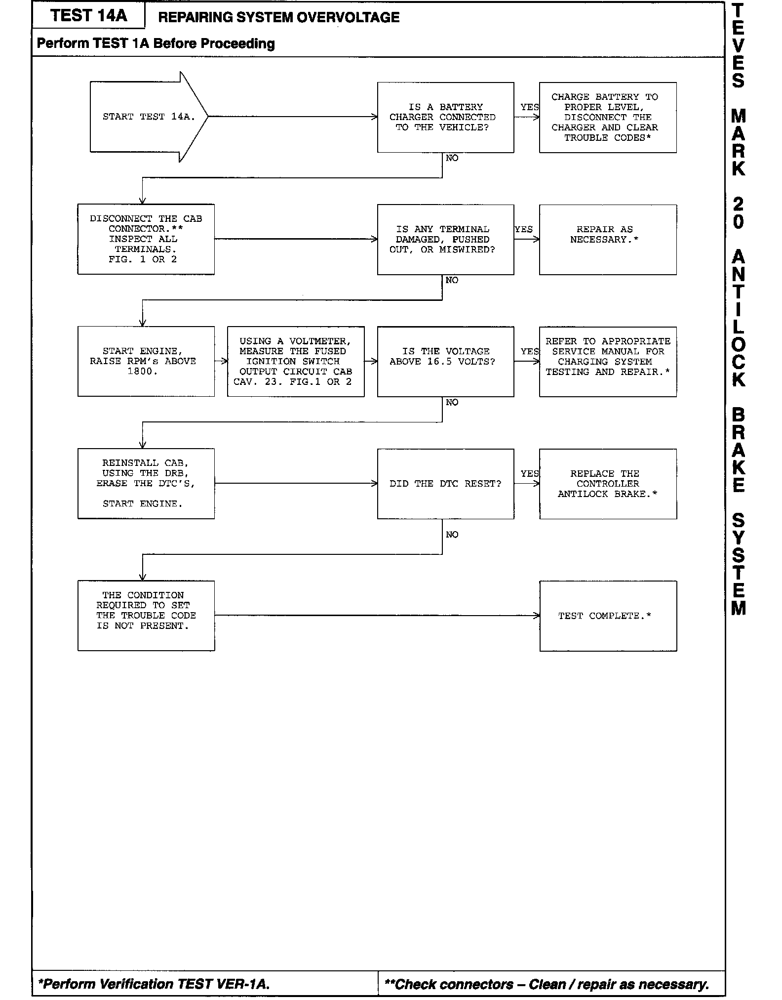
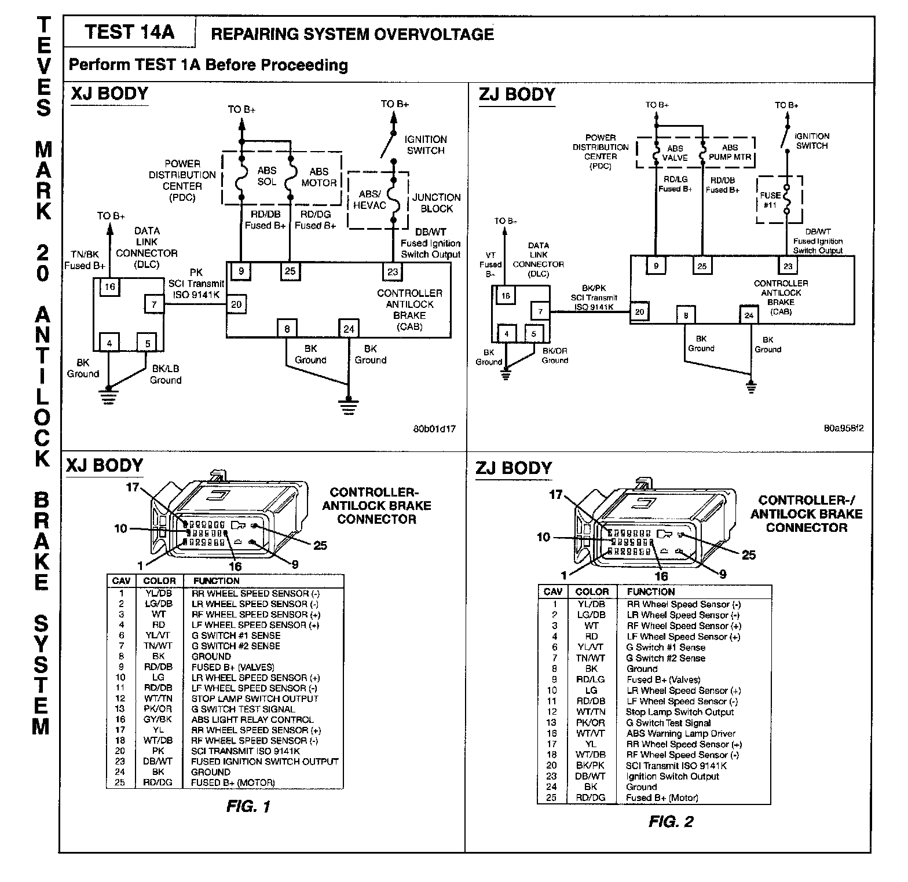

Test 14A - System Overvoltage
Test 14A:

Related Figures:

NAME OF CODE:
System Overvoltage
WHEN MONITORED:
Ignition on.
SET CONDITION:
The Controller Antilock Brake (CAB) monitors the fused ignition switched output at all times for proper system voltage. If the voltage is above 19 volts at cavity 23, the trouble code is set.
POSSIBLE CAUSES:
- Charging system output voltage too high
- Improper jump starting vehicle
NOTE:
- A single asterisk (*) in the diagnostic chart indicates the Verification Test must be performed.
- A double asterisk (**) in the diagnostic chart indicates a connector must be checked, then cleaned or repaired as necessary.